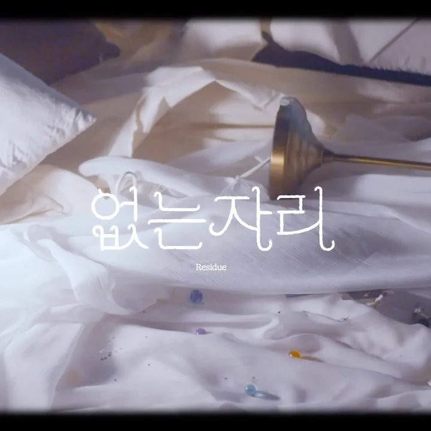

본문으로 건너뛰기
Tae Young Choi
Portfolio
About
Experience
Projects
Archives
Others
About
Experience
Projects
Archives
Others
Home
Others
작곡
청천난류 (Skyline)
작사 · 작곡
정이 · 2026.07

없는 자리 (Residue)
작곡
정이 · 2026.02
여름이오나요? (summer comes)
작곡 · 기타
정이 · 2025.02
Others 목록으로